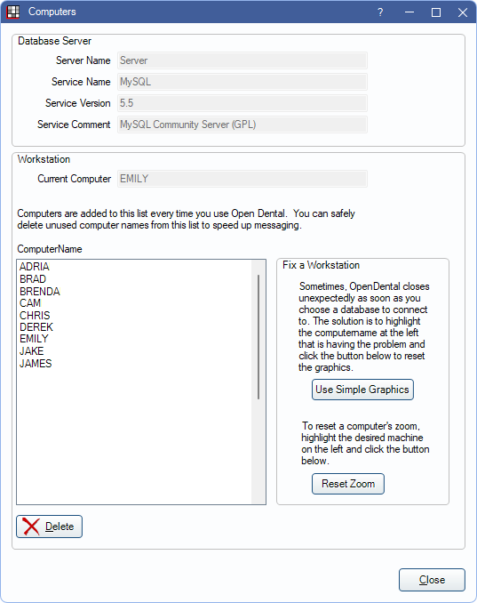

Computers
Use the Computers window to view computers that have logged into Open Dental and resolve workstation problems as needed.
In the Main Menu, click Setup, Advanced Setup, Computers.
Database Server: View information for the server that Open Dental is installed on.
- Server Name: The name of the Open Dental server.
- Service Name: The name of the MySQL service.
- Service Version: The version of MySQL that is installed.
- Service Comment: Informational comments about the MySQL version.
Current Computer: The computer name that is currently running MySQL.
Computer Name: Any computer that has used Open Dental. Unused computers can be deleted to speed up messaging. Double-click a computer name to edit the graphics preferences for that computer. This is not recommended.
Note: Client/Thin client computer names show in this list when using RDP/terminal services.
Fix a Workstation: Set graphics settings for other computers.
- Use Simple Graphics: Set another computer's Graphics Preferences to simple. This is useful as a fix for machines that do not have DirectX or OpenGL installed or working properly. On these machines, sometimes Open Dental closes unexpectedly when a user chooses a database. To fix this, from another computer, click on the computer name, then click Use Simple Graphics. This is the same as selecting the Simple Tooth Chart in Graphics.
- Reset Zoom: Reset another computer's Zoom settings to default.
Note: After changing settings for another workstation, users logged into the affected workstation need to log off and log back into Open Dental for changes to take effect.